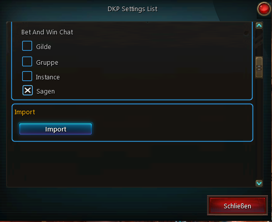
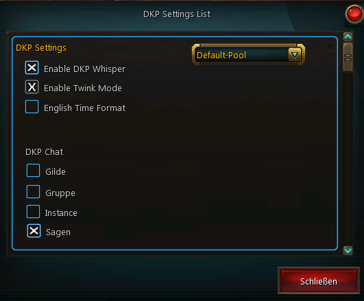
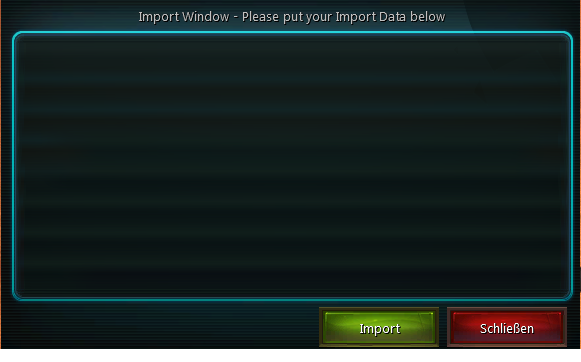

DKPManager
Contents
Einführung
DKPManager ist für die Ingame EQDKP Verwaltung in WildStar zuständig. Es versorgt euch mit alle wichtigen Information aus eurem DKP im Spiel und überläßt euch die möglichkeit alles notwendige anzupassen. Außerdem könnt ihr hiermit Ingame Auktionen während des Raids machen bzw. automatisieren, was viel Zeit erspart.
Installation
Download
Der offizielle Download auf Curse findet ihr hier.
Installation in WildStar
Nach dem ihr DKP Manager runtergeladen habt, müsst ihr den Ordner in den Addon Ordner von WildStar entpacken bzw kopieren.
DKPManager
DKPManager Configuration
DKPManager Config Plus
 
{kind=link}
{kind=link}
1. Whisperfunktion ein-/ausschalten
Die Whisperfunktion ist für Spieler gedacht, die kein GetDKP installiert haben. Damit können sie per whisper an dich ihre DKP Punkte abfragen. Dazu müssen sie dich mit 'dkp' anwshipern.
2. Enable Twink Mode
Diese Option ist nur als reine Information gedacht. Diese kommt aus eurer EQDKP+ Installation
3. English Time Format
Hier kann man einstellen ob die Uhrzeiten im Englischen oder Deutschen dargestellt werden sollen
4. DKP MultiPool oder auch Default-Pool
Hier kann man ein DKP Konto auswählen falls man mehr als nur eines Besitzt
5. DKP Chat
Hier wird der Chat eingestellt der für alle (Ausgeschloßen Bet And Win) Ausgaben vom DKP Manager genutzt wird.
6. Bet And Win Chat
Hier wird der Chat eingestellt der für sämtliche Ausgaben vom DKPManager Bet And Win System genutzt wird.
7. Import 
{kind=link}
Hier hat man die Möglichkeit einen String aus EQDKP+ zu importieren. Dieses ist nur im LUA Format möglich
DKPManager Bet and Win
{kind=link}
Bet and Win ist ein umfangreiches Tool im DKPManager. Bet and Win ermöglicht es euch, Versteigerungen der Items im Spiel vorzunehmen. In der dazugehörigen Konfiguration kann auch einen Countdown einstellen, der die Zeit, in der Gebote angenommen werden, begrenzt. Das BetAndWin Fenster poppt automatisch auf sobald Loot zu verteilen ist. Hier kann man das Item auswählen für welches Geboten werden soll und dementsprechend auf eine Auktion starten. Im laufe einer Auktion kann ein jeder Mitspieler bieten in dem er dem DKP Manager eine Zahl als Gebot Whispert
DKPManager List
{kind=link}
Das DKPManager Listfenster zeigt euch alle Daten über Punkte und Items, die ein Spieler bekommen hat, an. Per klick auf einen Spieler öffnet man das Itemfenster. Im besagten Itemfenster kann man auch DKP Korrekturen vornehmen
{kind=link}
Man ist auch in der Lage konkrete Spieler zu suchen. Die Suche ist dabei so intillegent das man nach Namensabschnitten suchen kann.
Der Report DKP Button bietet die Möglichkeit in dem dazu eingestellten Chat alle DKP´s auszugeben
Verweis
Der Download der DKP-Daten für GetDKP ist hier ausführlich beschrieben.